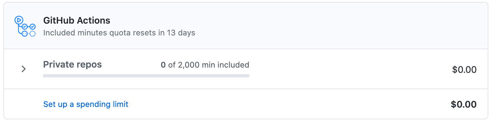
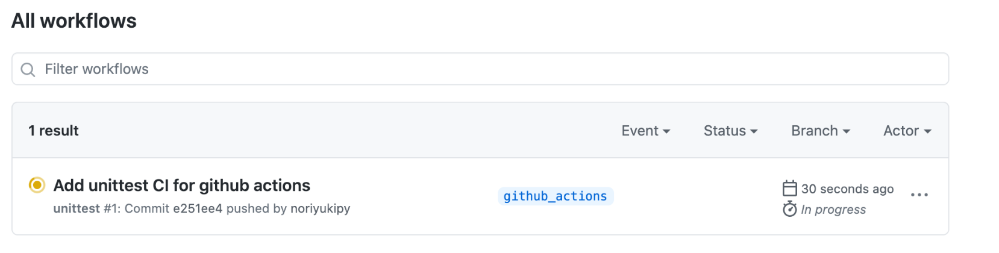
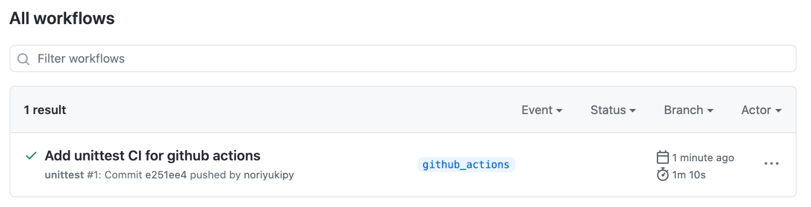

CircleCIからGitHub Actionsへの移行
Pythonで作成しているシンプルなチャットボットフレームワークmsgFlow のCIを、以前まで利用していたCircleCIからGitHub Actionsに移行しようと思い調べた内容をまとめます。
CircleCIで行っていた内容
CircleCIでは.circleci/config.ymlというファイルにCIで実行する内容を記述します。この中でpython:3.8.2-busterのコンテナ内で次のようにユニットテストを実行していました。
1 2 3 4 5 6 7 8 9 10 11 12 13 14 15 16 17 18 19 20 21 22 23 24 25 | |
GitHub Actionsでの設定
GitHub Actions入門に従って、CircleCIの内容に対応した設定をしてみます。
GitHub Actionsでは.github/workflows 以下にYAMLファイルをおくことで処理を記述します。
1 2 | |
このYAMLファイル（に記述した内容）をGitHub Actionsではワークフローと呼びます。
unittest.yml の中にチュートリアル中のコードをひとまずコピーしてみます。
1 2 3 4 5 6 7 8 9 10 | |
まずは runs-on でCIの処理を実行する仮想環境を指定します。サポートされているランナーとハードウェアリソース に書かれていますので、それに従って自分に適切なものを選択します。
今回はLinux環境を使うこととし、
1 | |
と指定します。
CircleCIでは、python:3.8.2-buster のコンテナ上でユニットテストを実行していました。GitHub Actionsでもドキュメントに書かれている通り同様のことができます。
GitHubホストランナーを使用すると、マシンのメンテナンスとアップグレードが自動的に行われます。 ワークフローは、仮想マシンで直接実行することも、Dockerコンテナで実行することもできます。
ここでリファレンスのワークフロー構文のドキュメントを読んでみるとcontainerによりワークフローを実行するDockerコンテナを指定できるようですので、使ってみましょう。
1 2 3 | |
この設定により、各ステップはコンテナ内で実行されます。
CircleCIでのcheckoutはuses: actions/checkout@v2というステップに対応しています。GitHub Actionsでは再利用可能なコードの単位としてアクションを定義しており、useを使ってステップでアクションを実行します。
あとはrunでCircleCIで実行しているコマンドラインプログラムをステップとして書けば完了です。全体としては次のようになりました。
1 2 3 4 5 6 7 8 9 10 11 12 13 14 15 16 17 18 19 20 21 22 23 24 | |
各ステップにnameで名前をつけておくと、実行しているステップの内容がわかりやすく表示されるのでおすすめです。
ローカルで実行結果の確認
この内容でCI実行してみたいと思いますが、実際にうまく動くかまだわかりません。それにも関わらずリポジトリにプッシュして実行結果を確かめるのは気が引けます。
CircleCIではローカルで実行して結果を確かめるためにcircleciコマンドを提供していました。GitHub Actionsではactがそれにあたります。
actをインストールしてみましょう。MacOSではHomebrewでインストールできます。
1 | |
actでは、引数としてイベントを指定します。今回はプッシュイベントでトリガーされるワークフローを作成したので、push引数をつけて実行します。
1 2 3 4 5 6 7 8 9 10 11 12 13 14 15 16 17 18 19 20 21 22 23 24 25 | |
うまく動きました！
GitHubへプッシュして動作確認
ローカルで動作確認できたので、次に実際にGitHubにプッシュしてGitHub Actionsで実行してみたいと思います。
その前に、GitHub Actionsでの料金体系について確認しておきます。About billing for GitHub Actionsに書かれている通り、無料のFreeプランではプライベートリポジトリに対して毎月2,000時間までは無料でGitHub Actionsを実行できます。 ここで気になるのは2,000時間を超えたらどうなるかということですが、ドキュメントによると毎月の支払い形態をとっている場合はデフォルトで超過できないように spending limit が $0 に設定されているとのこと。実際にGitHub右上のユーザアイコンから[settings]→[Billing&plans]からみると次のようにspending limitが$0に設定されているのがわかり、時間超過した場合には請求されることなくGitHub Actionsの利用が停止されることがわかります。

今回はパブリックリポジトリですので料金に関しては気にしなくて問題ありませんが、プライベートリポジトリでも気づかずに料金超過する心配は無いことがわかりました。
さて、リモートリポジトリにプッシュしてGitHub Actionsが実行されるかみてみましょう。
1 2 3 | |
GitHubのリポジトリページの[Actions]タブに移動すると次のようにワークフローが実行されていることがわかります。

しばらく待つとワークフローが正常に終了したことがわかります。

実行完了した項目をクリックすると実行内容の詳細を表示できます。
まとめ
今回はCircleCIでコンテナ上で実行していたユニットテストの処理をGitHub Actionsのワークフローで実行する方法について調べました。
実行に関しては、CircleCIのcircleciコマンドに対応するactコマンドでローカル実行したのち、GitHub上で実行が成功することを確認しました。
GitHub上でCIまで完結するため非常に便利な印象をもちました。